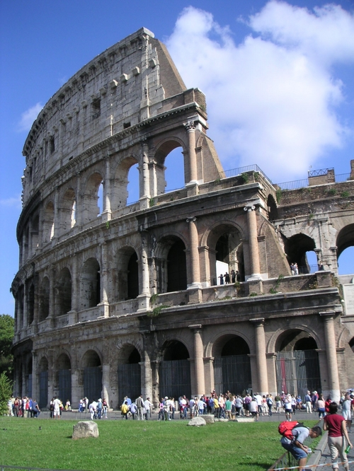
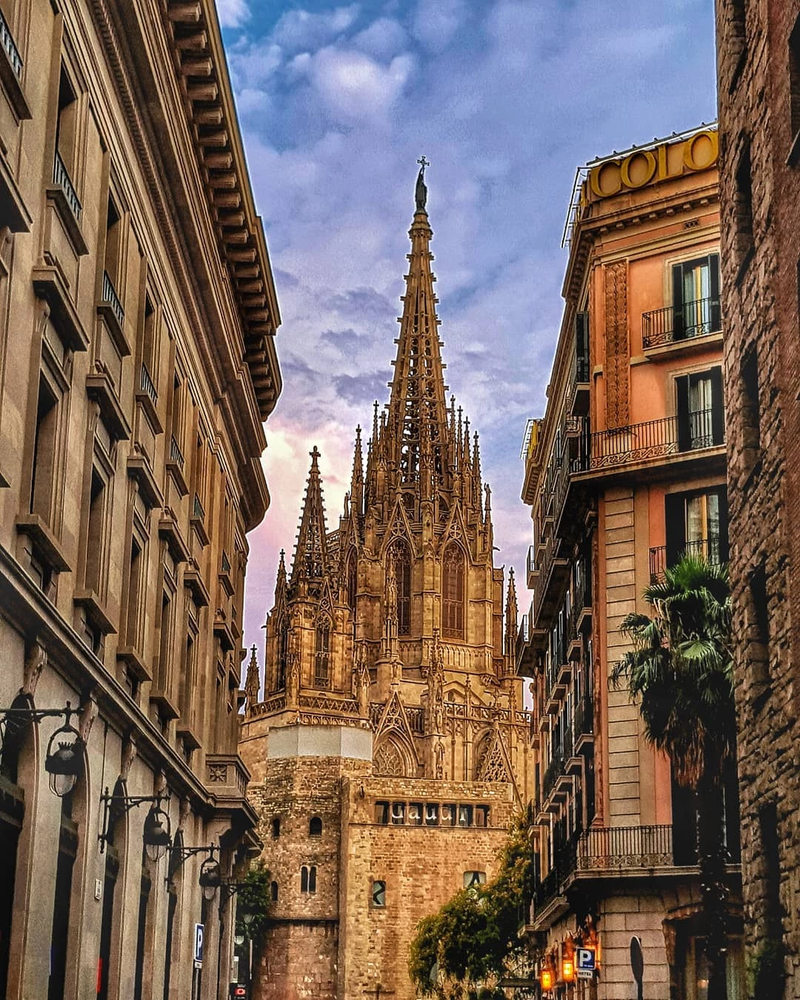
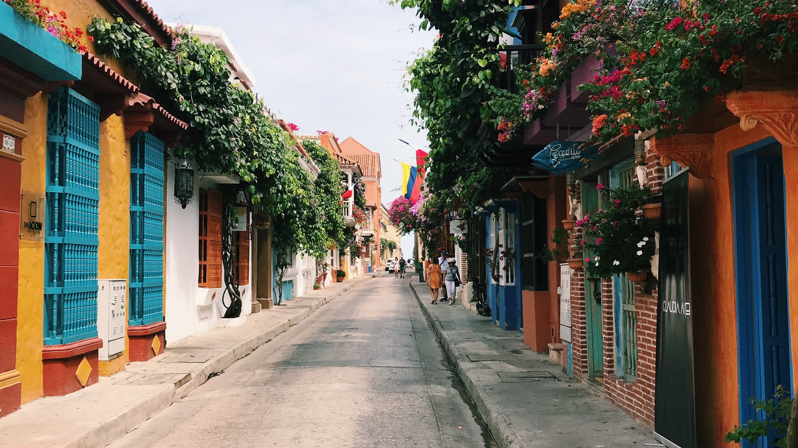
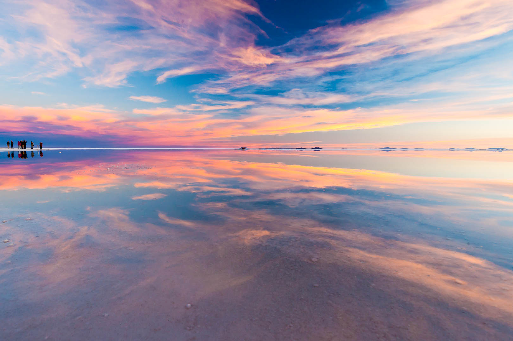

Explorar cidades como Paris é como entrar em um livro de história vivo.

Como folhear um romance antigo e elegante- cada esquina sussura arte, amor e poesia.
A charmosa Europa, onde cada cidade parece saída de um conto de fadas.
Explorar cidades como Paris é como entrar em um livro de história vivo.
Como folhear um romance antigo e elegante- cada esquina sussura arte, amor e poesia.
Conheça Roma e seus monumentos impressionantes como o Coliseu e o Vaticano.
Caminhando entre pedras e colunas, é como estar entre deuses antigos e eternos.
Barcelona é uma explosão de cores, sabores e formas - onde Gaudí transformou a cidade em arte.
Barcelona vibra com arte e cor - onde cada batida do flamenco ecoa pelas ruas.
A fascinante Ásia, um mosaico de culturas, cores e espiritualidade que desperta todos os sentidos.
No Japão, encanta-se com as grandes cidades e com a cultura. Conhecer Kyoto é uma experiência inesquecível.
Na Coreia, Seul é onde o passado e o futuro se encontram - palácios ancenstrais e tecnologia lado a lado.
Na índia, Jaipur, a Cidade Rosa, encanta com seus palácios magníficos, fortalezas majestosas e cultura vibrante.
A exuberante América do Sul, com toda sua beleza e diversidade, vai te deixar sem fôlego!
Paraty é poesia á beira mar - calçadas de pedra, casarões coloniais e um mar que sussura histórias antigas.

A música ecoa das raízes - entre batuques de jongo, cantos caiçaras e acortes de chorinho à beira-mar.
Cartagena vibra em cores, música e calor - uma cidade colonial que transborda charme caribenho.
Cada esquina dança ao som da cumbia e da champeta - onde o ritmo é alma e o sol nunca descansa.
No Salar de Uyuni, céu e terra se fundem num espelho mágico que parece infinito.
O silêncio se torna melodia - interrompido apenas pelo voo de um flamingo ou o sopro do vento entre os montes andinos.